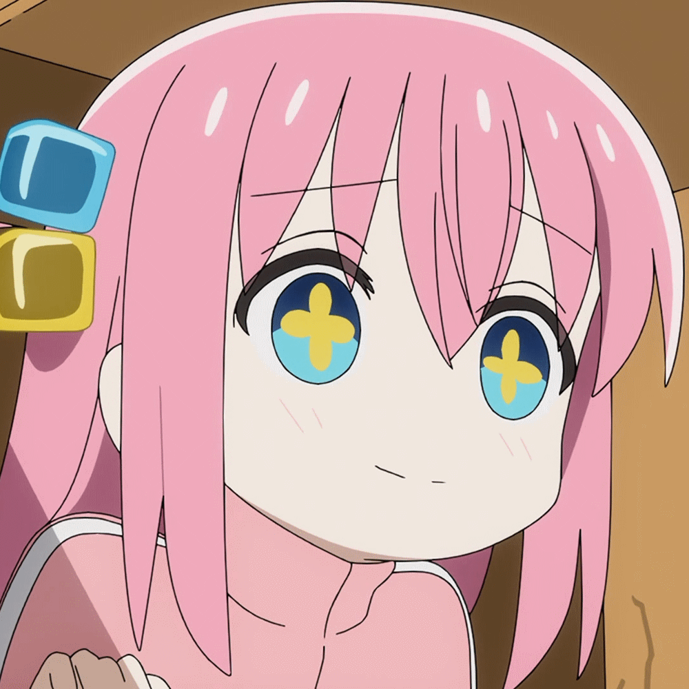
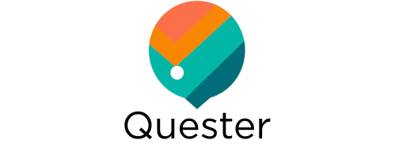
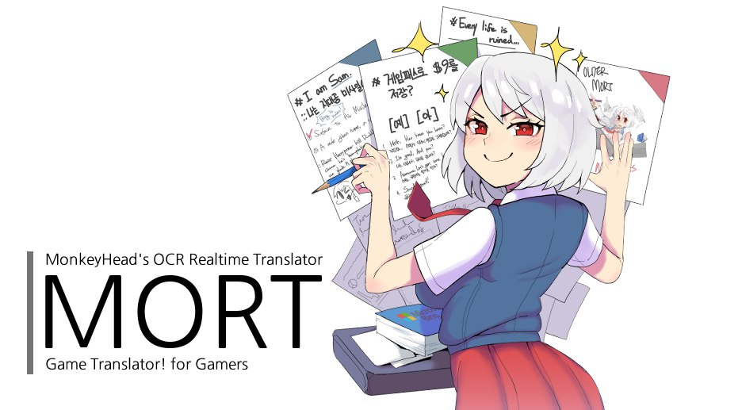

Программист на C#. В основном пишу на C# + WPF. Имею небольшой опыт с Kotlin и Android разработкой. Образование:
Окончил колледж информатики и программирования с отличием.
Учусь в Финансовом Университете при Правительстве Российской Федерации на бакалавриате.
Дизайнер из меня никакущий (как видно по сайту), верстальщик тоже.


Дизайн - Net2Fox
Картинка в заголовке - NegaTiv